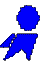
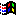
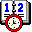

BIOS v2.6 — Kunal Kumar
Backend · Cloud Infrastructure · AI
{{ l.text }}{{ l.value }}
{{ bootStart }}
{{ bootSkip }}

Starting upKunal Kumar · Lead Software Engineer
{{ splashStep }}
{{ a.label }}
Kunal Kumar
Lead Software Engineer · Dynamisch · Pune, India
.NET & Azure backends, industrial IoT platforms and AI agents in Microsoft 365 Copilot. Every icon on this desktop is a part of my profile — {{ openHint }}.
✓
Show this window each time the computer starts
Kunal Kumar
Lead Software Engineer · Team lead
Pune, India · 5+ years since Aug 2021
Address
C:\KUNAL\PROJECTS
{{ p.name }}
{{ selProject.name }}
{{ selProject.desc }}
{{ selProject.stack }}
{{ selProject.meta }}
7 object(s)
Kunal Kumar
Lead Software Engineer · Team lead · Pune, India
Profile summary
.NET backend engineer and tech lead with 5+ years building APIs and backends for systems where timing and reliability are visible to users — from projector-based gaming lanes that must stay in sync to industrial IoT telemetry. Currently Lead Software Engineer at Dynamisch, leading a team of 6 on an industrial IoT platform: owning the backend, overseeing architecture across the IoT and front-end layers, and running code reviews and releases.
Key expertise
{{ g.name }}
{{ g.joined }}
Languages
English – Full Professional Proficiency · Hindi – Professional Working Proficiency
1 / 3
Work experience
{{ r.title }} · {{ r.employer }}{{ r.dates }}
{{ r.summary }}
{{ r.stack }}
2 / 3
Education
Bachelor of Engineering (B.E.) – Computer Science
SJMIT – Visvesvaraya Technological University · Graduated 08/2021
Soft skills
Ownership · Problem Solving · Mentorship · Cross-team Collaboration · Communication · Delivery Focus
3 / 3
{{ l.text }}
C:\KUNAL>
{{ noteDate }} · draft
{{ noteTitle }}
{{ noteBody }}
Dates
Role
{{ r.dates }}

{{ r.title }}{{ r.employer }}
{{ r.summary }}
{{ r.stack }}
08/2021
B.E. Computer Science
SJMIT – Visvesvaraya Technological University
TRACK 01{{ trackTime }}
Deploy on a Friday
{{ m.text }}
{{ tttMsg }}
{{ tttScore }}
{{ snakeScore }}{{ snakeBest }}
{{ snakeMsg }}
{{ solStockLabel }}
{{ c.face }}{{ c.suit }}
{{ f.face }}{{ f.suit }}
{{ w.status }}
{{ w.statusRight }}
{{ clock }}
BIT
{{ saverHint }}